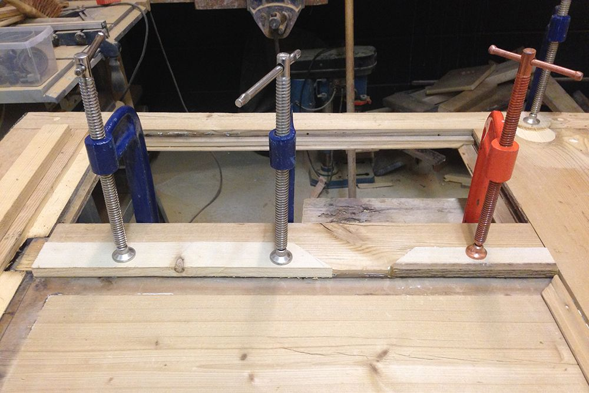

About Anglian Paint Strippers
An established business of over 40 years, specialising in the paint stripping and restoration of original period doors and shutters.
What we do
We specialise in the stripping and restoration of doors and shutters, so please give us a call for advice on any item you would like us to paint strip.
We also make tables, butchers blocks, stools and ledge and braced cottage doors, which are hand made in our workshops and can be made to customers' requirements. We have a stock of over 400 original period doors.
- Paint stripping of doors, shutters and some furniture
- Finishing work & restoration
- Showroom of period doors, fireplaces, ironmongery and handmade tables
Now part of Mitchell Reclaim Ltd
Anglian Paint Strippers is now based at, and owned by, Mitchell Reclaim Ltd, at 2 Anson Road, Norwich Airport Industrial Estate, Norwich NR6 6ED.
Visit the workshop
Unlike some other companies, we welcome customers to come and visit our workshop, see what we do, and view stock items or customers' items that are being worked on.

Talk to us about your doors
We are happy to help and advise on any queries you may have.